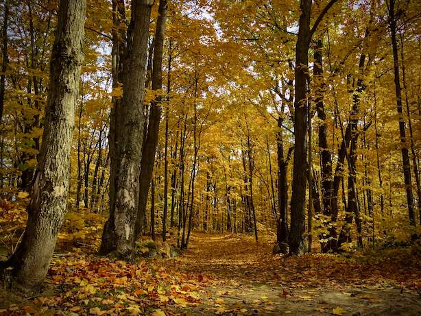

Gallery
Spring & Summer
Fall & Winter
- 


-


Rachel Hankai
Born and raised in Canada, I am a lover of nature and all things outdoor adventure related. Wandering through a lush green old growth forest, or contemplating the sun setting over snow covered distant mountain peaks, or standing at the meeting point of a forest and a quiet still lake in the early morning light, with the soft song of a loon breaking through the mist, are all music to my soul. Even the simple fragrance of crisp fall leaves crunching underfoot, can make the worst day so much better.
I am fortunate to have had the opportunity to have travelled and lived in various parts of North America and Europe. Along the way, I have used whatever photography equipment that I could get my hands on and tried to record and bring with me, the moments that I found most fascinating.
Being an avid gardener, I have had many adventures over the years with Mother Nature and her views and ideas of what my garden should look like. Recording her thoughts through each season with my camera has always been a great pleasure of mine.
I have tried to capture those fleeting moments in nature that I have experienced, to be able to share them with others and to create lasting memories. I hope that you will also be able to appreciate and find joy in some of these brief moments that I have treasured.
Currently, I am living in the Austrian Alps and continuing my search for new and intriguing perspecitves in time, that capture my imagination through my lense. Always being grateful to journey through life while discovering the inspiring world around us.
If you have any questions or requests with regards to my photos, please contact me below. I look forward to hearing from you.